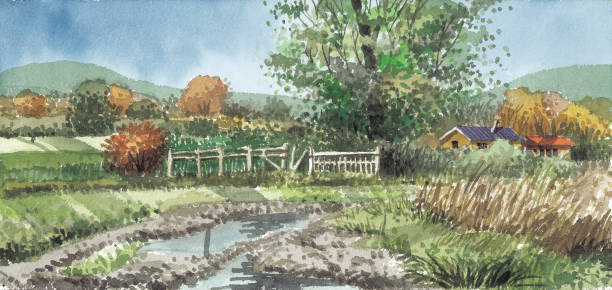

Welcome to South Korea, a land of vibrant contrasts where ancient traditions seamlessly blend with cutting-edge modernity. Immerse yourself in the rich tapestry of Korean culture – from the serene beauty of Buddhist temples and the bustling energy of Seoul to the breathtaking natural landscapes and the warm hospitality of the Korean people. Discover the unique flavors of Korean cuisine, experience the thrill of K-Pop, and create unforgettable memories in this captivating country..
Whether you're planning a serene island getaway, an adventure in bustling Seoul, or a cultural journey through history and tradition, we have everything you need to craft the perfect itinerary.
About This Website
This website is designed to be your one-stop destination for everything related to South Korea.
We are passionate about showcasing the wonders of South Korea to the world. Our mission is to provide you with the most up-to-date and comprehensive information on travel destinations, accommodation, activities, and cultural experiences. We strive to be your trusted guide, helping you plan an unforgettable journey through this captivating country. Whether you're a seasoned traveler or a first-time visitor, we're here to assist you in discovering the best of South Korea.
We provide:
Detailed guides to top destinations like Seoul, Jeju Island, and Busan.
Insights into Korean culture, food, and traditions.
Recommendations for hotels, restaurants, and parks to make your trip comfortable and enjoyable.
Our goal is to help travelers from all over the world experience the beauty, hospitality, and vibrancy of South Korea.
Gallery

Plan Your Trip
Ready to explore South Korea? Use our trip planner to customize your journey from anywhere in the world. We'll help you find flights, accommodations, and must-visit locations.